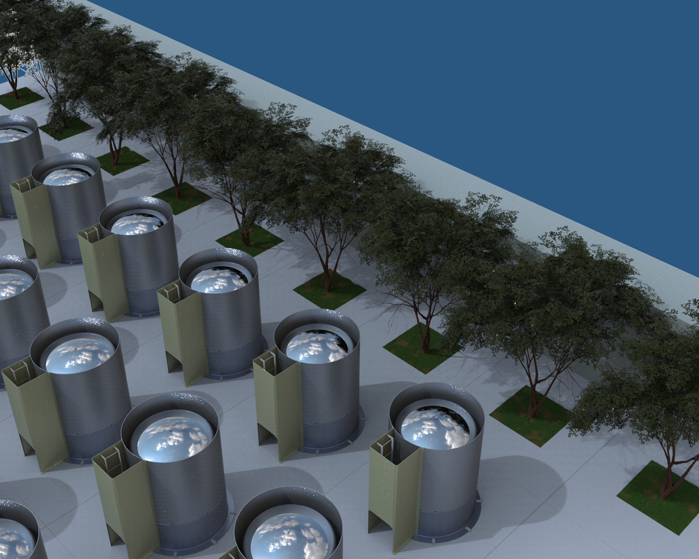
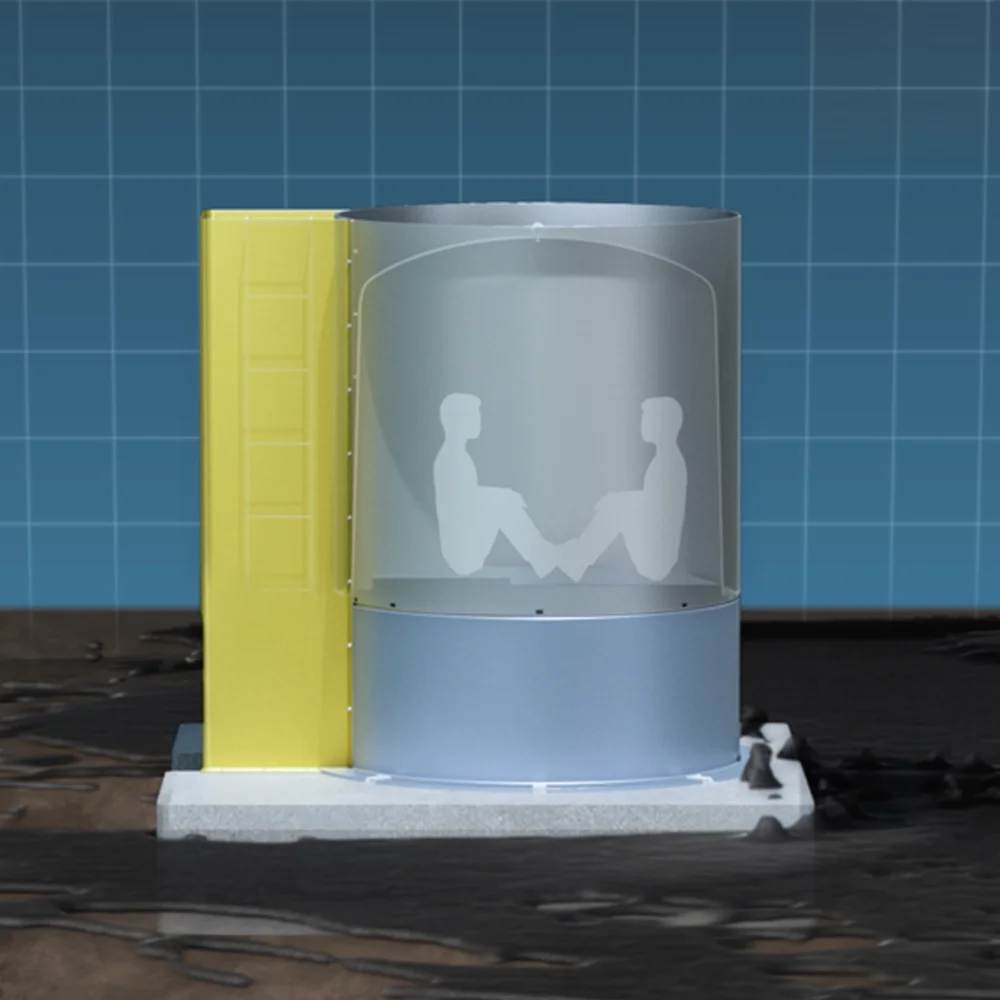

歩行困難が始まる水位。子ども・高齢者には特に危険な状況となります。
津波災害時、
庭先にある家族の避難場所。
高台まで走って逃げられない人のための
地上固定型防災シェルター
ARCHIMEDES （アルキメデス）
宮崎大学との共同開発製品


— FLOODING
大地震と津波の脅威
地震発生後、津波はあっという間に沿岸部へ到達します。
沿岸部から離れた内陸でも、陸上の短距離選手並みのスピードで迫ります。
成人でも移動が困難になります。転倒リスクが高まり、自力脱出が難しくなります。
立てない、漂流物にぶつかる。想定上の死亡率は100％。
30cmの津波でも足を掬われてしまいます。
30cmの津波は一見浅く見えても、実際には歩行が困難になります。避難時の移動リスクをシミュレーション映像でご確認いただけます。
映像を見てわかるように、人はあっという間に流されてしまいます。津波が近くまで迫ってきてしまったら、高台まで走って逃げることはかなり困難です。

— PRODUCT
ARCHIMEDES （アルキメデス）
地上固定型防災シェルター
弊社のアルキメデスは、避難する時間がない、避難することが困難な人のために、一時的に津波から身を守るベースを、家の庭先など身近な場所に確保することを目的とした地上固定型シェルターです。
製品詳細を見る → シミュレーションを見る →— NEWS
お知らせ
- 2025.11.14〜15
- 宮崎県内の企業や研究機関、大学の優れた製品や最新技術を紹介する展示会へ出展しました。
- 2025.11.15
- 宮崎日日新聞朝刊に、防災シェルターの記事が掲載されました。
- 2026.00.00
- ホームページを開設しました
- 2026.00.00
- 防災シェルター「ARCHIMEDES」が販売開始されました
防災シェルターの企画・開発・製作を行い、防災に関する製品づくりに取り組んでいます。
会社概要を見る →
製品に関するご質問や導入のご相談など、お気軽にお問い合わせください。
お問い合わせはこちら